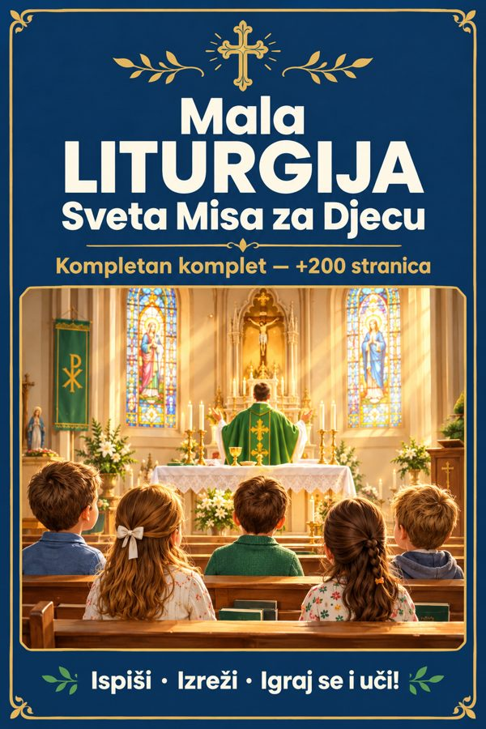

Producto principal
Mala Liturgija — glavni komplet
+200 stranica: 13 tematskih blokova, 40 listova za bojanje, igre, ukrštanice i vodič korak po korak kroz svaki dio Mise.
Abrir →Tus bonos
Bono 1
Krunica korak po korak
20 otajstava objašnjenih djetetu + krunica za slaganje i bojanje.
Abrir →Bono 2Moja Prva Pričest
Odbrojavanje do Prve Pričesti, ispit savjesti prilagođen djeci i diploma.
Abrir →Bono 3Molitve za svakodnevni život
Osnovne katoličke molitve jednostavnim jezikom — svaka objašnjena djetetu.
Abrir →Bono 4Moja Prva Biblija u Pričama
Ključni odlomci Svetog Pisma ispričani jednostavnim jezikom, s ilustracijama.
Abrir →Bono 5Retci za bojanje
Biblijski redak + njegovo značenje na svakom listu za bojanje.
Abrir →Bono 652 Kršćanska Izazova
Jedan mali izazov vjere svaki tjedan u godini — za cijelu obitelj.
Abrir →Bono 7Sveci: Isusovi Prijatelji
Sveci ispričani kao bliski prijatelji — jednostavni životopisi za djecu.
Abrir →Por dónde empezar
- Preuzmi i ispiši glavni komplet Mala Liturgija
- Odaberi jedan blok za ovaj tjedan i počni s djetetom
- Koristi bonuse kao dopunu: krunica, molitve, izazovi
- Vraćaj se svaki tjedan na novi blok — ne trebaš sve odjednom
Para uso personal. Prohibida la reventa o redistribución.